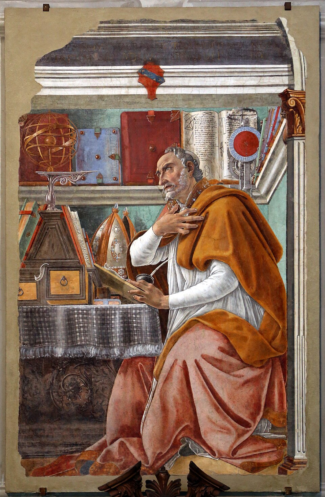

Prolégomènes
Le texte au programme présente une particularité : par certains aspects, il constitue une œuvre cohérente, avec une certaine unité qui autorise la démarche éditoriale de Truchet : réunir dix discours dans un seul volume intitulé Oraisons funèbres. Mais d’un autre point de vue, ces oraisons possèdent un statut si disparate qu’on peut, en sens inverse, considérer que chaque discours est distinct des autres et leur est, d’une certaine manière, irréductible. Nous reviendrons dans un billet ultérieursur la question de l’unité du volume à étudier.
Cette situation, qui est loin d’être inédite dans les programmes d’Agrégation, entraîne une conséquence : elle autorise deux approches possibles du texte, plus complémentaires qu’exclusives.
Reconstruire l’« architexte » : l’atelier des oraisons
La première approche consiste à entrer dans l’atelier des oraisons, afin d’y retrouver les secrets de fabrication des discours. Cette méthode implique de considérer le corpus transversalement afin de dégager les propriétés communes des textes : elle tend à retrouver quelque chose comme une poétique générale de l’oraison funèbre bossuétiste, voire un « architexte », dirait Genette, qui permettrait de définir les règles, les contraintes et les grandes opérations auxquelles obéissent les dix discours. Cette lecture est indispensable à la préparation de la dissertation : pour pouvoir réfléchir à « la mort », à « la Providence », à « l’éloge », à « l’autorité » ou à « l’histoire » dans l’ensemble du programme, il faut disposer d’une représentation synthétique du corpus et être capable d’en faire apparaître les récurrences, les thèmes structurants, les formes générales. Cette étude peut être conduite selon deux perspectives complémentaires, l’une diachronique, l’autre synchronique.
L’approche diachronique : situer l’oraison dans une histoire des genres
Une première manière de comprendre l’oraison funèbre consiste à la replacer dans la longue histoire des discours sur les morts. Il faut alors remonter aux traditions antiques de l’éloge funèbre et de l’epitaphios logos, considérer les relations entre « éloge », « lamentation » et « consolation », puis observer la transformation chrétienne de ces formes. Il devient également nécessaire de comparer l’oraison funèbre avec des genres voisins : le panégyrique, le sermon, la consolation, l’élégie, voire certaines formes de méditation sur la mort.
Cette perspective historique permet de faire apparaître une difficulté fondamentale : l’oraison funèbre chrétienne hérite d’un genre ancien voué à la célébration des hommes tout en appartenant désormais à une religion qui relativise la gloire, le rang, la richesse, la puissance et finalement toute grandeur terrestre. Elle doit donc constamment convertir l’éloge : louer un homme sans faire de lui une idole, rendre justice à sa grandeur sans oublier son néant de créature, déplorer une mort sans contredire l’espérance chrétienne de la résurrection. L’histoire du genre ne constitue ainsi nullement un simple préambule érudit : elle révèle une des contradictions constitutives de l’oraison funèbre, que Bossuet devra résoudre ou surmonter.
L’approche synchronique : une poétique paradoxale
À cette histoire du genre s’ajoute une étude synchronique des dix textes. On peut alors tenter de dégager un certain nombre de structures récurrentes et de principes communs : autrement dit, construire une sorte de matrice de l’oraison funèbre bossuétiste. La tâche est d’autant plus complexe que la poétique de l’oraison est un tissu de paradoxes.
L’efficacité de la parole
— Rhétorique et anti-rhétorique. Comment Bossuet, qui prétend à la simplicité, qui affirme n’avoir de respect que pour la vérité nue et qui affecte de céder la parole aux prophètes et au Christ, peut-il mobiliser toutes les ressources de la plus profane des éloquences ? Les oraisons possèdent à cet égard une forte dimension métatextuelle : Bossuet ne cesse d’interroger, de justifier ou de récuser les pouvoirs mêmes du discours qu’il est en train de prononcer. Nous aurons à restituer brièvement l’histoire de la rhétorique chrétienne, c’est-à-dire de la légitimation par les Pères de l’Église du recours aux artifices et aux ressources de l’éloquence profane (le jalon essentiel est ici le quatrième livre du De Doctrina christiana d’Augustin).
— Les jeux de l’énonciation. Qui parle ? De quel droit ? Au nom de qui ? L’autorité bossuétiste, qui constitue un champ d’enquête majeur pour Anne Régent-Susini, obéit à un second paradoxe : elle ne peut s’affirmer qu’en s’effaçant derrière une autorité supérieure. Pour Bossuet, « le prédicateur évangélique est celui qui fait parler Jésus-Christ ». Il faudra donc étudier les rapports entre voix propre, voix institutionnelle, voix scripturaire et voix divine.
— La composition comme montage. La structure des oraisons ne se définit pas seulement par les catégories traditionnelles de l’éloquence (exorde, argumentation, exemples, péroraison). Elle tient aussi à une véritable pratique du montage : enchâssement d’événements, déplacements temporels, récits interrompus et repris, rapprochements entre épisodes éloignés, digressions assumées compliquent la composition, créant des effets d’écho, de reflets et de symétries.
— Exemplarisation, commémoration et monumentalisation. Comment une biographie singulière, surtout celle d’un grand, devient-elle une vie lisible, transmissible, imitable ? L’oraison funèbre est un acte de mémoire. Elle rappelle ce qu’une communauté (famille, maison, institution, Église, royaume) doit au défunt ; elle sélectionne les traits qui méritent de demeurer dans la mémoire collective et fixe une certaine image de son existence au point de fournir un modèle de vie. Cette fonction commémorative conduit à parler de monumentalisation : le mort, voué matériellement à disparaître, reçoit dans le discours une forme de permanence. L’oraison construit ainsi un monument verbal au moment même où elle proclame l’universelle destruction des monuments humains : nous explorerons les enjeux de ce nouveau paradoxe.
— Les effets de l’oraison et l’économie affective. Proche du sermon, l’oraison doit à ce titre instruire, toucher, faire agir. Pour travailler à la conversion de son public, Bossuet mobilise les ressources de l’éloge, de l’exhortation, du pathétique, de l’indignation, de la crainte, de l’espérance et des larmes. Il faudra donc penser les passions émues dans l’oraison non comme des ornements esthétiques, mais bien comme des instruments d’action spirituelle.
Théologie, ecclésiologie et économie du salut
— Grâce, péché, conversion et salut. La grâce est un don, une lumière que Dieu nous donne afin que nous accomplissions ses commandements et que nous trouvions notre chemin vers lui, afin d’acquérir notre salut et notre bonheur. La question de la grâce, dont on verra qu’elle est essentielle au XVIIe siècle, traverse tout le corpus : grâce prévenante, grâce de conversion, persévérance et pénitence appartiennent à cette constellation. Elle devient particulièrement visible lorsqu’une vie est lue comme cheminement spirituel, mais elle affleure aussi dans les controverses doctrinales.
— L’Église comme institution de salut. Bossuet ne parle jamais seulement en moraliste chrétien : il parle en homme d’Église. Il faudra donc étudier l’Église en son ensemble, l’Oratoire ou encore la Sorbonne comme corps, comme institutions, comme médiations du salut, et observer la place qu’y occupent prédicateurs, évêques, prêtres, communautés et docteurs.
— Sacrements, pénitence et bonne mort. Les scènes terminales engagent souvent une théologie sacramentelle : confession, Eucharistie, pénitence, préparation à la mort. La « bonne mort » n’est pas seulement un motif narratif ; elle suppose une économie du salut.


L’anthropologie chrétienne
A travers l’ensemble des oraisons transparaît une même conception de l’homme, conforme à un certain christianisme largement issu de la tradition augustinienne – depuis Philippe Sellier, on parle volontiers d’augustinisme classique pour désigner cette anthropologie noire qu’on retrouve aussi bien chez Pascal, chez les moralistes, chez Racine ou même chez Molière.
— Grandeur, misère, concupiscence. De saint Augustin, Bossuet retient une image de l’être humain travaillé par le mal et tenté par le péché, hanté par un amour-propre funeste, déchu d’une royauté adamique, jouet des passions, écartelé entre grandeur et misère.
— Vanités, apparences et néant des créatures. Le monde humain est celui des faux biens : gloire, rang, richesse, pouvoir, beauté, fortune. L’oraison apprend à en dévoiler la fragilité. Le langage de la vanité et du néant ne constitue donc pas un simple motif funèbre : il engage toute une conception de la créature, incapable de trouver en elle-même sa consistance. L’oraison funèbre ne cesse de marteler le Vanitas vanitatum de l’Ecclésiaste et le sic transit gloria mundi du rituel papal, popularisé par l’Imitation de Jésus-Christ de Thomas a Kempis.
— Passions, amour-propre et illusions du moi. Pour les augustiniens, la racine du mal est l’amour de soi, que les classiques appellent souvent « amour propre » et qu’Augustin nomme « amor sui ». La doctrine des deux amours est centrale pour comprendre les fondements de la conception classique (et donc augustinienne) de l’être humain : « Fecerunt itaque civitates duas amores duo : terrenam scilicet amor sui usque ad contemptum Dei, caelestem vero amor Dei usque ad contemptum sui », « Deux amours ont donc fait deux cités : l’amour de soi jusqu’au mépris de Dieu, la cité terrestre ; l’amour de Dieu jusqu’au mépris de soi, la cité céleste » (Cité de Dieu, XIV, 28). Il faudra isoler plus nettement la question des passions : ambition, orgueil, désir de gloire, attachement aux biens terrestres, peur de la mort. Le discours funèbre est aussi une entreprise de désillusion, qui cherche à faire apparaître derrière les conduites sociales les mouvements secrets de l’amour-propre.
— Grandeurs mondaines, grandeurs chrétiennes. Mais Bossuet ne frappe pas complètement d’inanité les grandeurs d’établissement et ne les condamne pas : la question de la légitimité des titres et des honneurs en régime augustinien n’est pas le moindre des paradoxes que Bossuet affronte dans les oraisons funèbres : à quelles conditions les grandeurs humaines peuvent-elles être converties et ainsi sauvées ? La noblesse, le pouvoir, la gloire militaire ou politique ne sont pas nécessairement condamnés comme tels ; ils doivent être subordonnés à une autre mesure pour être admises dans la cité de Dieu.
— Temps, mort et éternité. La condition humaine est temporelle : elle est soumise à l’instabilité, au changement, à l’effacement. La mort révèle cette vérité. Mais le christianisme ne s’arrête pas au constat du néant : le temps peut devenir passage vers l’éternité. Il faudra donc penser ensemble fuite du temps, fragilité de l’existence, mort, salut et permanence, ce qui nous conduit au point suivant, qui concerne l’histoire – image mobile de l’Eternité, d’après le Timée1.
Le visible et de l’invisible : histoire, Providence, Ecritures
L’oraison funèbre, parce qu’elle révèle la vérité du défunt, a partie liée avec une existence sur terre qui obéit au régime du clair-obscur : nous ne voyons que comme dans un miroir dépoli, le monde est une énigme, affirme saint Paul dans la première aux Corinthiens. Cette conception crépusculaire explique l’importance structurante de fils rouges transversaux d’une importance essentielle.
— Écriture et intertextualité biblique. La Bible n’est pas un réservoir de citations mais une machine à penser, raconter et interpréter, juger, en un mot qualifier les événements. Elle fournit des figures, des récits, des paradigmes, des comparaisons et des structures de causalité. Les personnages bibliques permettent à Bossuet de rendre lisibles les vies contemporaines. Les événements de la Bible ne sont passés à tout jamais : ils se réactualisent et se réactivent dans le présent.
— Providence, causes premières et causes secondes. Le tumulte du monde, son instabilité, ses changements et la destinée humaine ne sont pas un chaos plein de bruit et de fureur et qui ne signifie rien : ils s’inscrivent selon Bossuet dans un ordre providentiel dont la clef n’est pas toujours aisée à découvrir. Envisagée d’un point de vue très global, l’Histoire se déroule conformément au plan bienveillant de Dieu. Le cours des événements procède d’une cause première, Dieu ; mais Dieu agit rarement directement : les miracles sont devenus très peu nombreux. Généralement, Dieu fait advenir sa volonté à travers les volontés humaines et l’enchaînement des faits : les causes secondes. Toute la difficulté (tout le défi pour Bossuet, et tout le paradoxe) consiste à penser ensemble Providence divine et responsabilité humaine : la volonté humaine est libre, les êtres humains sont entièrement responsables de leurs actes, et pourtant ils accomplissent, dans le moindre de leurs gestes, paroles ou pensées, le plan de Dieu. Car il est écrit : « il ne tombe pas un passerau à terre sans la volonté de votre Père, et même tous les cheveux de votre tête seront comptés » (Mt 10, 30 et Lc 12, 7).
— Histoire et interprétation Le problème pour Bossuet ne consiste donc pas (seulement) à raconter ce qui s’est passé, mais à rendre l’histoire intelligible. Pour y parvenir, l’oraison ordonne les événements, agence les faits, sélectionns, choisit, leur donne une direction, transforme le hasard apparent en histoire signifiante. Il faudra constamment distinguer l’ordre découvert dans les événements de l’ordre produit par leur mise en récit : nous ne pourrons faire l’économie d’un détour par l’Histoire, sauf à rater une dimension vraiment essentielle des Oraisons funèbres. Cette exigence nous conduit à apercevoir les limites de cette première méthode « poétique » de lecture des oraisons.
*
A partir de ces éléments précédemment énumérés, on peut aisément imaginer une sorte de « moulinette » interprétative capable d’être appliquée aux dix oraison. Cette grille est extrêmement utile : elle permet de circuler dans le corpus, d’établir des rapprochements, de construire des dissertations et d’éviter de traiter chaque texte comme un isolat. Mais elle risque aussi de devenir dangereuse précisément lorsqu’elle fonctionne trop bien. À force de chercher les invariants, on risque en effet de conclure que Bossuet aurait écrit dix fois la même oraison. Le corpus se réduit alors à quelques grands thèmes que l’on retrouve partout : la vanité du monde, la Providence, la mort, l’Écriture, la conversion, la grandeur et le néant. Les exemples changeraient, mais la démonstration resterait fondamentalement la même.
Une telle approche devient périlleuse lorsqu’il s’agit de traiter une leçon, et plus encore d’une étude littéraire ou une explication de texte, où l’on attend précisément que soit comprise la singularité d’un passage.
Elle pose en outre un problème générique et historique. Si l’on prend les choses de trop haut, Bossuet finit par ressembler à tous les autres prédicateurs de son temps. Fléchier, Bourdaloue ou Mascaron parlent eux aussi de la mort, de la vanité, de la Providence et du salut, en mobilisant plus ou moins les mêmes procédés, les mêmes citations et les mêmes références. Une définition trop générale de l’oraison funèbre risque ainsi de ne plus permettre de comprendre ce qui fait la singularité propre de Bossuet.
Enfin, cette méthode tend à rendre interchangeables non seulement les textes, mais encore leurs objets : les morts deviennent interchangeables, les publics deviennent interchangeables, les circonstances deviennent interchangeables. Or Bossuet ne parle jamais exactement du même type de personnage, devant le même auditoire, dans la même conjoncture politique ou religieuse. La généralisation peut donc finir par effacer précisément ce que chaque discours fait de particulier.
Les stratégies de l’oraison : foi et/ou politique ?
Il conviendra donc de mêler à cette première méthode, synthétique, une autre méthode, analytique. Cette seconde approche restituera à chacune des oraisons sa singularité en la replaçant dans sa situation historique, institutionnelle, religieuse et scripturaire propre. Ces deux démarches ne s’excluent pas. L’une permet de construire le modèle ; l’autre empêche le modèle de devenir une machine abstraite qui ferait disparaître les différences entre les œuvres. Cette dernière implique de restituer les stratégies de Bossuet prédicateur dans les Oraisons funèbres.
— Un événement de parole. Affirmer que l’oraison est un événement de parole, c’est reconnaître qu’elle est prononcée à une date précise, dans un lieu donné, devant une assemblée déterminée, à propos d’un mort dont la réputation, la famille, le statut social, les engagements politiques ou religieux sont connus des auditeurs. Elle intervient également à un moment particulier de la carrière de Bossuet. Elle répond à une commande, à des attentes, parfois à des difficultés. Elle doit parler de certains faits et peut difficilement parler de certains autres, pour exercer tel ou tel effet non seulement moral, mais politique. Il faut donc poser à chaque fois des questions très concrètes : qui commande le discours ? pour quel défunt ? devant quel public ? à quel moment ? dans quel lieu ? après quels événements ? avec quelles attentes familiales, dynastiques, politiques ou ecclésiastiques ? À cette échelle, le contexte n’est plus une information extérieure qui fournirait un cadre vague et au fond superflu : il devient une condition essentielle de l’intelligibilité de l’oraison.
— Une intervention dans l’histoire. L’oraison est action : il faudra se demander non seulement ce que Bossuet dit, ce que son discours représente, mais aussi ce que son discoursfait. Une oraison peut rendre à une famille une mémoire publiquement honorable (Le Tellier) ; transformer une existence politiquement ou moralement ambiguë en exemple chrétien (Cornet) ; réintégrer une trajectoire de désordre dans un récit de conversion (la Palatine) ; replacer une gloire militaire sous la Providence (Condé) ; subordonner une grandeur aristocratique à la monarchie et à Dieu (Marie-Thérèse) ; transformer enfin un événement incompréhensible en événement spirituellement intelligible (Henriette-Marie). On passe alors d’une poétique des thèmes à une étude des opérations du discours : sélection des faits, condensation, omission, euphémisation, déplacement, recontextualisation, redistribution de l’agentivité, interprétation providentielle, transposition scripturaire. Une vie n’entre jamais intacte dans une oraison. Elle est racontée, ordonnée, hiérarchisée et interprétée pour s’insérer dans une perspective dynastique, politique, ou ecclésiastique, et éventuellement agir sur le cours des événements.
— Reconstruire l’intertexte. Cette lecture singulière ne peut cependant pas se limiter à l’histoire politique ou sociale. Les textes de Bossuet appartiennent à un univers de références dont une part considérable est devenue étrangère au lecteur moderne. Il faudra donc éclairer les allusions historiques, mais également l’histoire ecclésiastique, les controverses religieuses, la théologie, les traditions patristiques et, surtout, les Écritures. L’intertextualité biblique doit ici recevoir une place particulière. Chez Bossuet, la Bible n’est pas simplement un réservoir de citations prestigieuses dont le prédicateur viendrait orner son discours. Elle fournit des figures, des récits, des analogies et des structures de pensée grâce auxquels une existence particulière devient intelligible. David, Salomon, Job, les prophètes, saint Paul ou les épisodes évangéliques ne servent donc pas simplement à illustrer une idée déjà constituée. Ils participent à la constitution même du sens. Il faudra ainsi apprendre à lire les Écritures avec Bossuet, c’est-à-dire à comprendre la manière dont un événement contemporain peut être saisi à travers une figure biblique, dont une vie peut être relue selon une économie chrétienne du salut, et dont l’histoire profane peut être insérée dans une histoire providentielle. Dans cette perspective, le Nouveau Testament constitue évidemment le centre théologique de cette lecture (Christ, grâce, salut, résurrection, Église sont des notions centrales) mais l’Ancien Testament conserve une importance considérable comme réservoir de figures historiques, politiques et royales. Il faudra donc parler plus largement des Écritures lues chrétiennement, le Nouveau Testament fournissant la clef de leur accomplissement.
*
Il ne s’agira finalement pas de choisir entre ces deux méthodes. La première est nécessaire : sans poétique générale, nous serions incapables de comparer les textes, d’identifier les structures communes ou de répondre aux grandes questions transversales du programme. La seconde l’est tout autant : sans lecture historique, contextuelle et intertextuelle, nous réduirions les dix oraisons à dix variations sur quelques thèmes identiques. Les deux approches doivent donc constamment se contrôler l’une l’autre. Ainsi, la Providence constitue bien une catégorie générale des Oraisons funèbres. Mais elle ne remplit pas exactement la même fonction à chaque fois. De même, la critique de la grandeur humaine traverse tout le corpus. Mais elle ne produit pas le même effet lorsqu’elle concerne une abbesse, un prêtre de l’Oratoire, un docteur de Sorbonne, une reine, un ministre ou le plus célèbre guerrier du royaume.
C’est dans le mouvement entre ces deux échelles (l’architexte et l’événement singulier, la poétique générale et l’action particulière) que nous essaierons de lire les dix Oraisons funèbres. Qu’est-ce qui demeure identique d’une oraison à l’autre ? Qu’est-ce que Bossuet doit chaque fois réinventer parce qu’il ne parle jamais du même mort, devant les mêmes vivants, dans la même histoire ? En tenant ensemble les deux termes, nous éviterons que la préparation à l’Agrégation transforme ces dix extraordinaires événements de parole en un catalogue de procédés.
Notes
-
« εἰκὼ κινητὸν αἰῶνος », Timée, 37d-38a.
↩